GBDA 101 - Magazine Design
This design assignment was created using InDesign and is composed of a collection of my photographs and a personal reflection.
April 2025

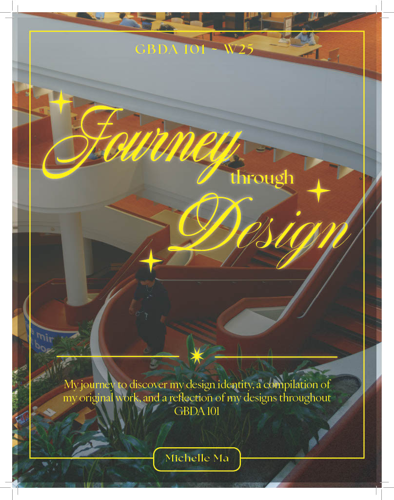
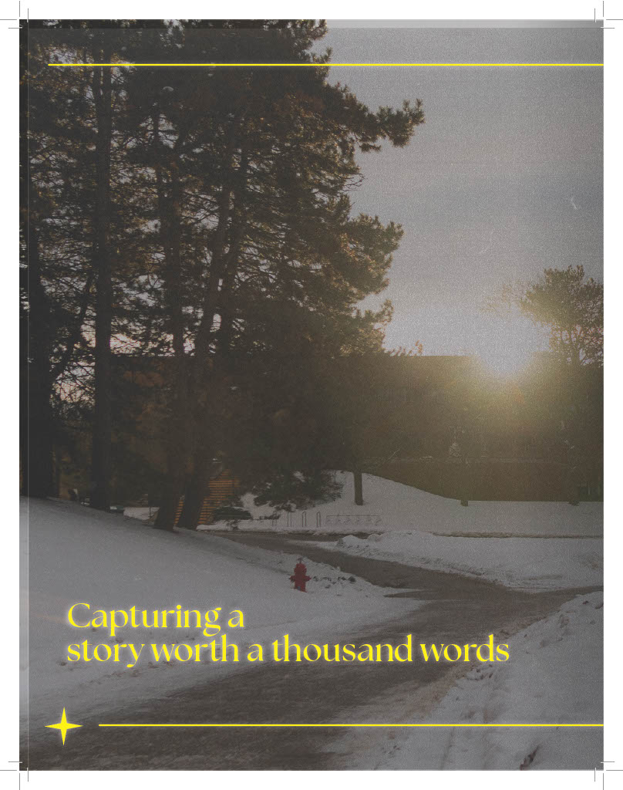
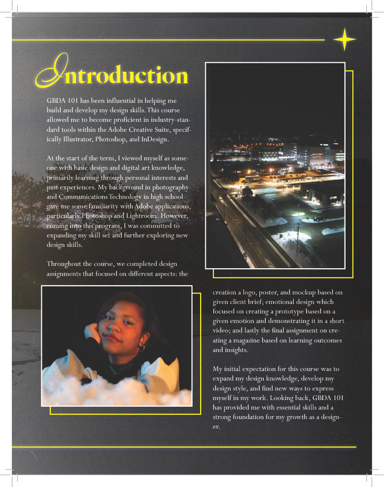
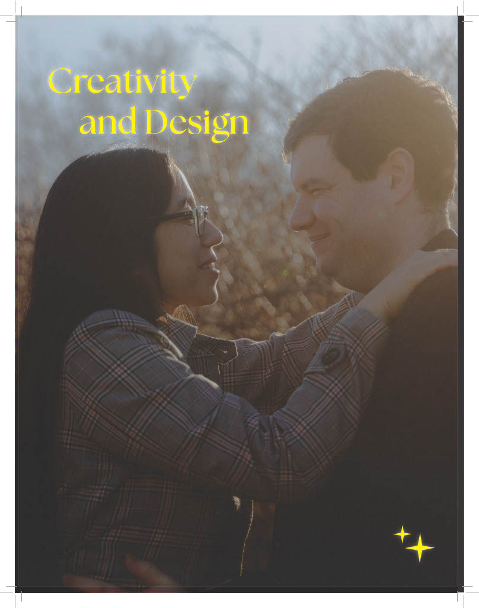
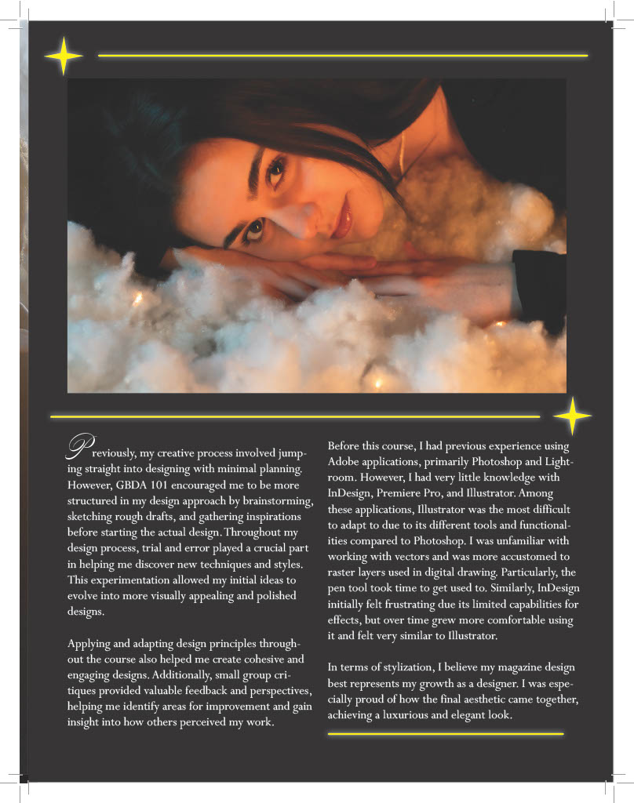
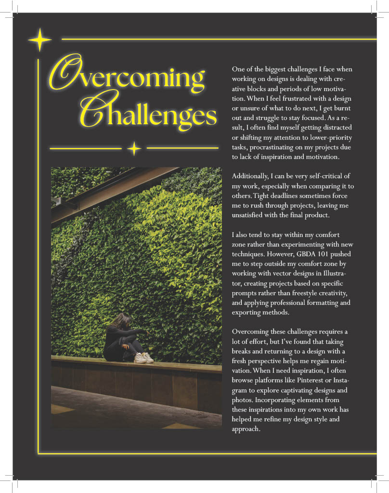
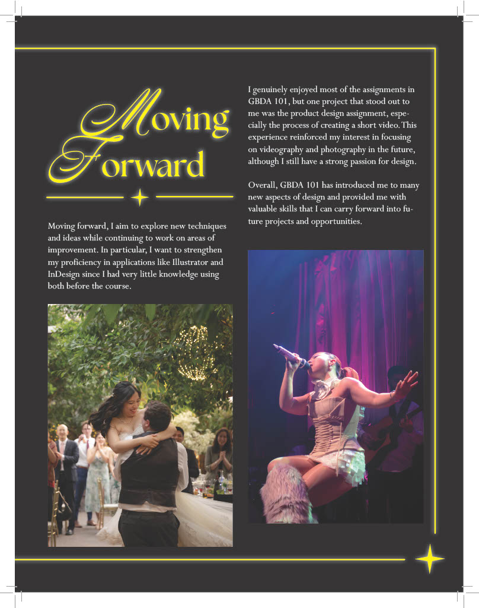
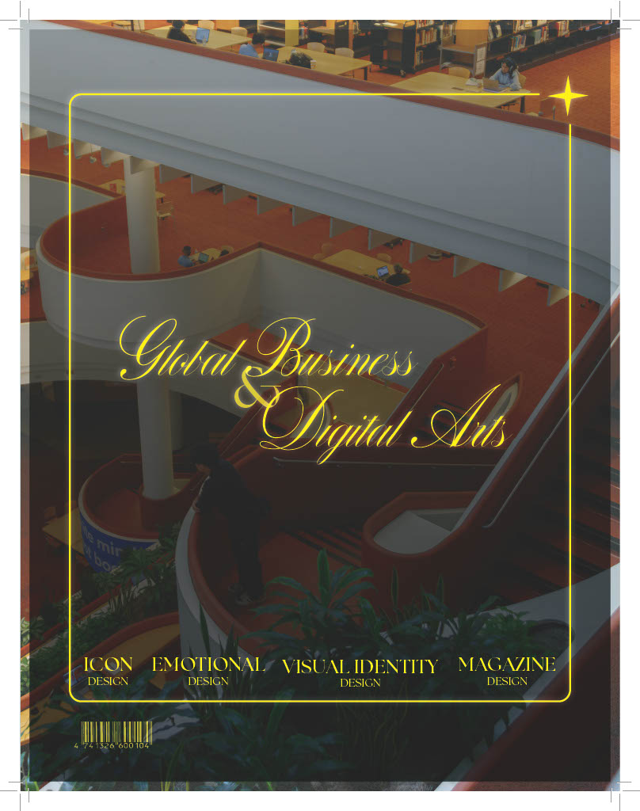
This design assignment was created using InDesign and is composed of a collection of my photographs and a personal reflection.
April 2025
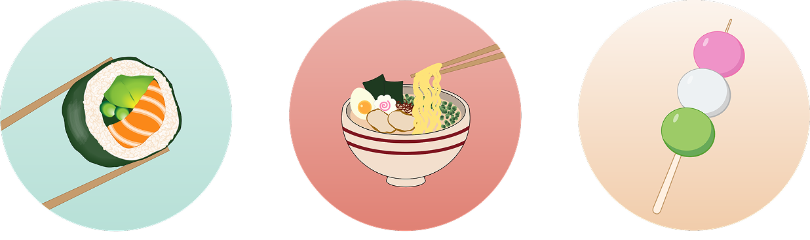
This icon assignment was created using Illustrator.
February 2025
Photographed and composed images into an Instagram post for UWVSA's Pokémon Pottery event. Photos were edited in Lightroom and the collage was created using Figma.
November 2025
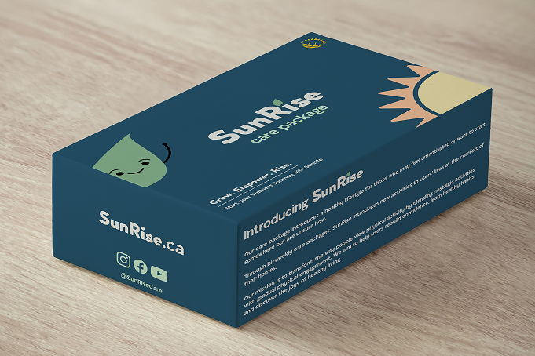
Designed a care package mock-up for DesignJam solution based on the topic “Chronic Care that Connects”.
October 2025
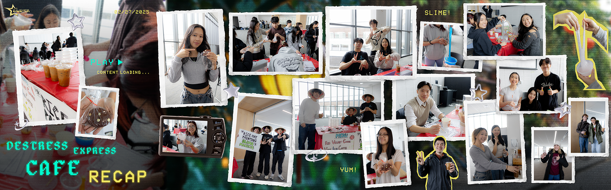
Photographed and composed images into a seamless Instagram Post for UWVSA's Destress Café Event. Photos were edited on Lightroom and collage was created using Photoshop.
March 2025
In this branding assignment, I designed a logo and poster design that was based off a client brief that was assigned. The logo was created on Illustrator whereas the poster was created on Photoshop.
February 2025
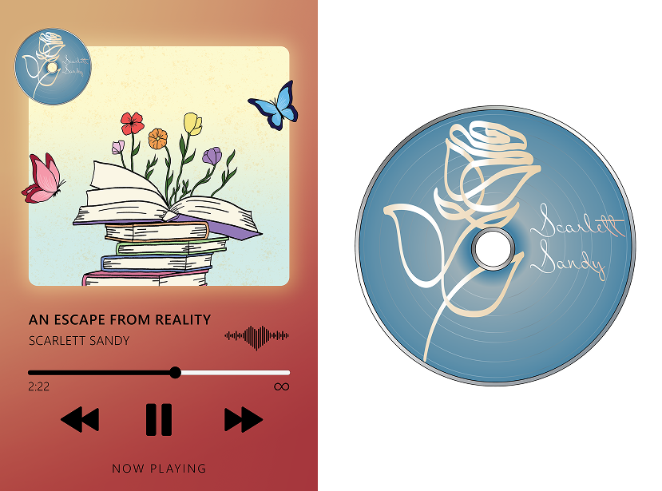